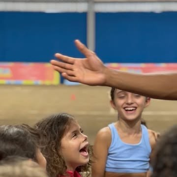
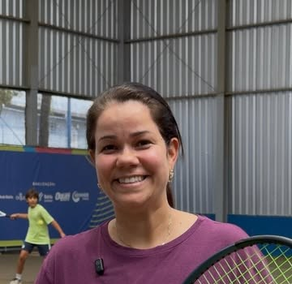
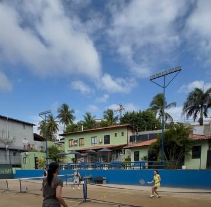
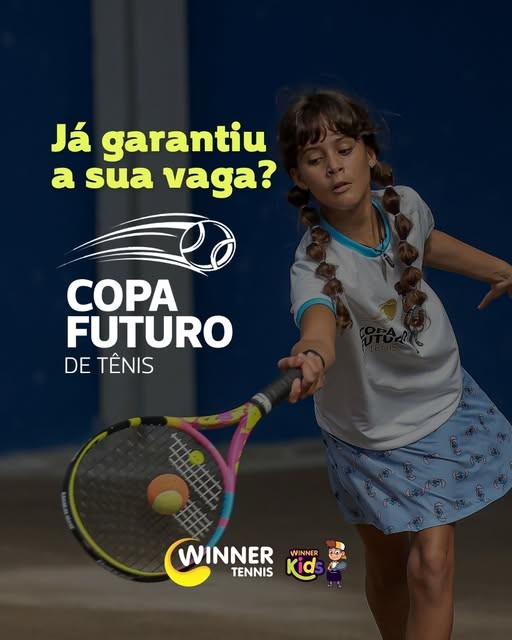
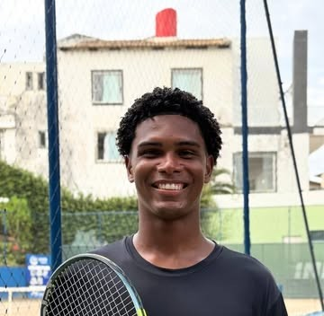

Referência no tênis baiano.
Três décadas de tradição e mais de 600 alunos. Da primeira raquete no Winner Kids ao circuito adulto, para todos os níveis e idades.



Copa Futuro
- Inscrições até 30/10, aqui mesmo no site
- Unidade Pituaçu, quadras cobertas
- Chaves e ranking no próprio site, sem subdomínio

Uma turma para cada idade e nível
Do Winner Kids, que começa aos 4 anos, à pré-temporada de quem joga torneio. Todo programa começa com uma aula experimental.
Winner Kids
4 a 10 anosA primeira raquete com bola, quadra e turma do tamanho da criança. Porta de entrada para a Copa Futuro.
Detalhes 02Winner Xpress
8 aulas · iniciantesCurso fechado para quem sempre quis aprender a jogar tênis. Aprendizado e desafio.
Detalhes 03Turmas adultas
Todos os níveisTurmas regulares por nível, do iniciante a quem já joga o Winner Open.
Detalhes 04Coach individual
Aula particularAula só sua, com plano de treino para corrigir um golpe ou preparar um torneio.
Detalhes 05Clínicas
Encontros temáticosSaque, dupla, tática: encontros curtos com tema e data marcada.
Detalhes 06Pré-temporada
Atletas de torneioTécnica, tática, físico e mental antes do calendário de torneios.
DetalhesO que faz a Winner ser especial pra você?
Venha descobrir na quadra. Diga para quem é a aula e o melhor período: a recepção responde no WhatsApp com o horário.

Três circuitos, um lugar só
Inscrição, chave, ranking e resultado de cada etapa na mesma página. Nada de sair do site para se inscrever.
Copa Futuro
Infantojuvenil5ª etapa de 6 a 8 de novembro. Inscrições até 30/10.
Hub do torneio 1ª–6ªWinner Open
Circuito AmizadeCircuito adulto por classe. 3ª etapa em andamento desde 2 de outubro.
Chaves ao vivo A·B·CCircuito Litoral Norte
Unidade Winner VillasAbertura em 28/11 com duplas, churrasco e chopp. Chaves simples a partir de 04/12.
InscriçãoQuem está do outro lado da rede
Cada professor com foto, formação e o programa que conduz. Nomes e fotos entram assim que a Winner enviar.
Escolha o horário livre e jogue
Veja os horários livres por unidade e dia, segure o seu e confirme pelo WhatsApp. Sem ligar para saber se tem vaga.
Horários e valor da hora: a confirmar com a Winner.
Onde e com quem falar
Duas unidades e um WhatsApp por assunto. Instagram: @winnertennisacademia.